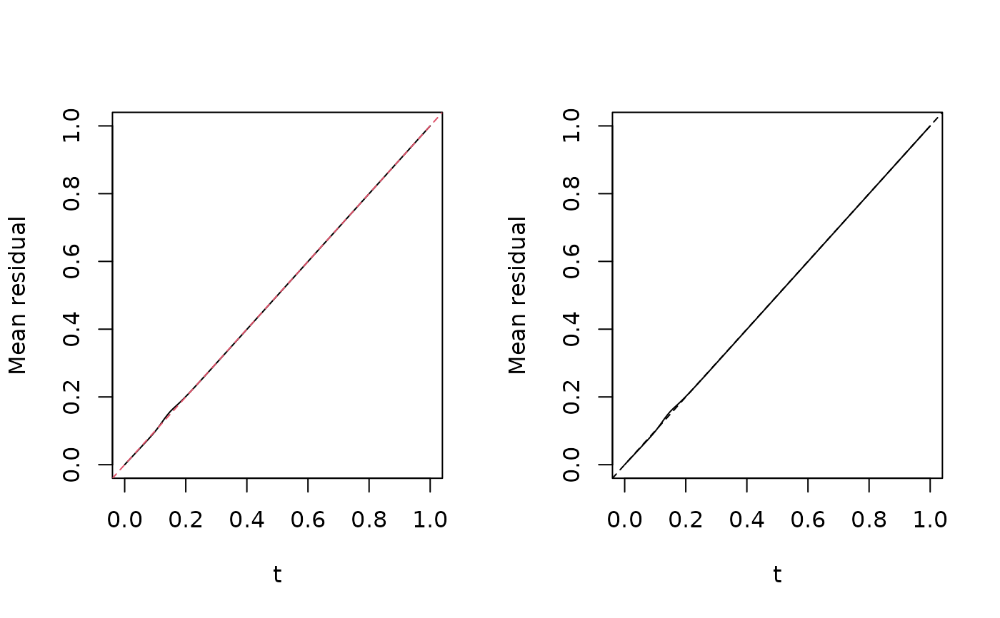
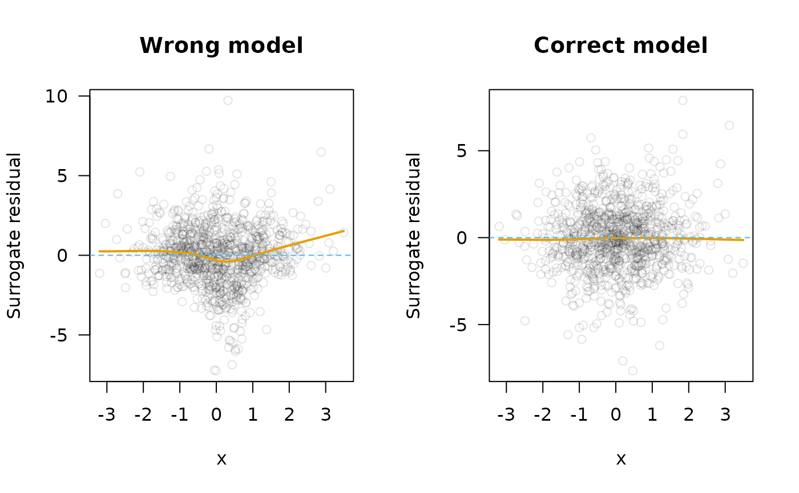
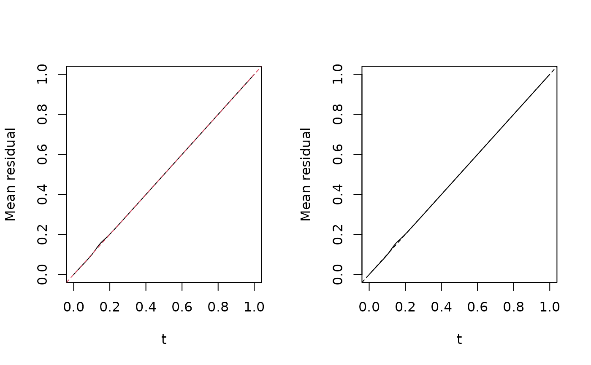
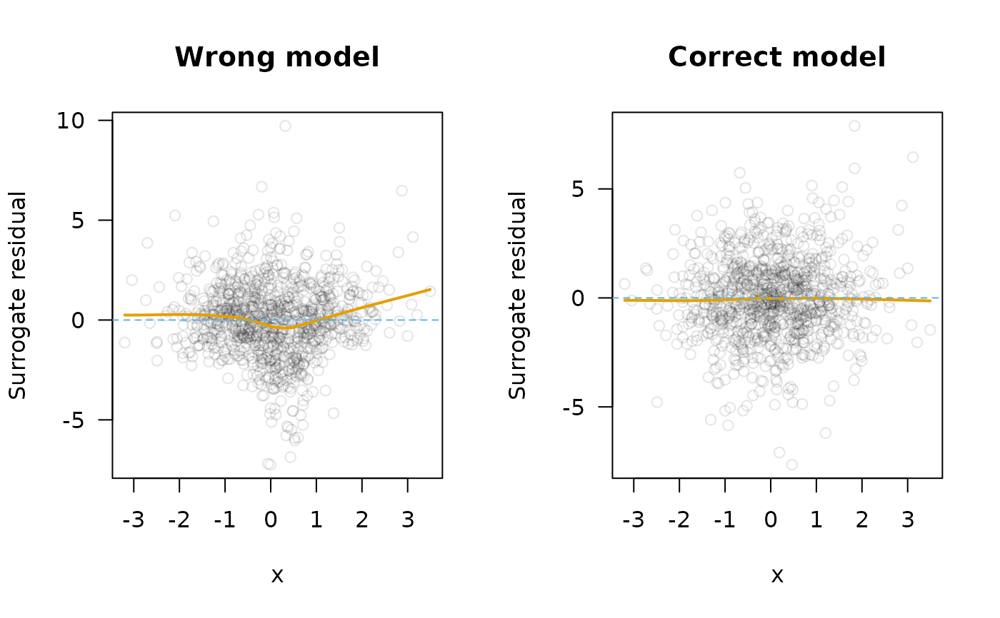

Function residuals
fresiduals.RdComputes the function residual described in TBD.
Usage
fresiduals(
object,
type = c("function", "surrogate", "probscale"),
link.scale = TRUE,
...
)Arguments
- object
A fitted model object.
- type
Character string specifying the type of residual to compute. Current options include:
"function"- (the default) for a list of functional residuals;"surrogate"for a sample of surrogate residuals;"probscale"for probability-scale residuals.
- link.scale
Logical indicating whether or not surrogate residuals (
type = "surrogate") should be returned on the link scale (TRUE) vs. the probability scale (FALSE). Default isTRUE.- ...
Additional optional arguments. Currently ignored.
Value
Either a list of functions (type = "function") that also inherits
from class "funres" or a vector of residuals (type = "surrogate" or
type = "probscale").
Examples
# Generate data from a logistic regression model with quadratic form
set.seed(1217)
n <- 1000
x <- rnorm(n)
z <- 1 - 2*x + 3*x^2 + rlogis(n)
y <- ifelse(z > 0, 1, 0)
# Fit models with/without quadratic term
fit.wrong <- glm(y ~ x, family = binomial) # wrong
fit.right <- glm(y ~ x + I(x^2), family = binomial) # right
#> Warning: glm.fit: fitted probabilities numerically 0 or 1 occurred
# Generate functional residuals
fres.wrong <- fresiduals(fit.wrong)
plot(fres.wrong[[1]]) # plot first functional residual
 # Function-function plot
par(mfrow = c(1, 2))
ffplot(fres.wrong, type = "l")
ffplot(fit.wrong, type = "l")

# Residual vs. predictor plot for each model based on surrogate method
par(mfrow = c(1, 2), las = 1)
lpars <- list(col = 2, lwd = 2)
col <- adjustcolor(1, alpha.f = 0.1)
palette("Okabe-Ito")
scatter.smooth(x, y = fresiduals(fit.wrong, type = "surrogate"),
lpars = lpars, col = col, main = "Wrong model",
xlab = "x", ylab = "Surrogate residual")
abline(h = 0, col = 3, lty = 2)
scatter.smooth(x, y = fresiduals(fit.right, type = "surrogate"),
lpars = lpars, col = col, main = "Correct model",
xlab = "x", ylab = "Surrogate residual")
abline(h = 0, col = 3, lty = 2)

# Function-function plot
par(mfrow = c(1, 2))
ffplot(fres.wrong, type = "l")
ffplot(fit.wrong, type = "l")

# Residual vs. predictor plot for each model based on surrogate method
par(mfrow = c(1, 2), las = 1)
lpars <- list(col = 2, lwd = 2)
col <- adjustcolor(1, alpha.f = 0.1)
palette("Okabe-Ito")
scatter.smooth(x, y = fresiduals(fit.wrong, type = "surrogate"),
lpars = lpars, col = col, main = "Wrong model",
xlab = "x", ylab = "Surrogate residual")
abline(h = 0, col = 3, lty = 2)
scatter.smooth(x, y = fresiduals(fit.right, type = "surrogate"),
lpars = lpars, col = col, main = "Correct model",
xlab = "x", ylab = "Surrogate residual")
abline(h = 0, col = 3, lty = 2)
